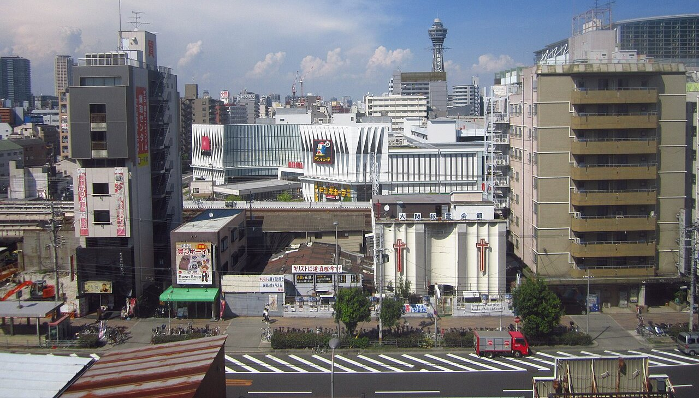
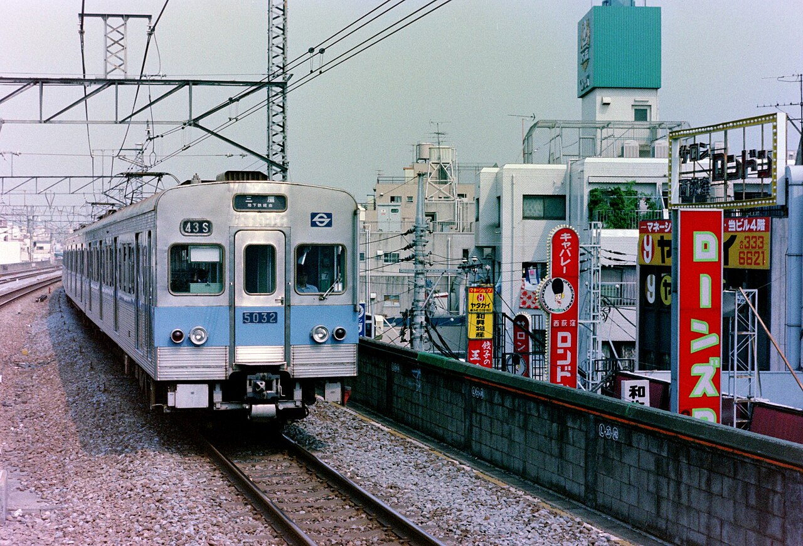
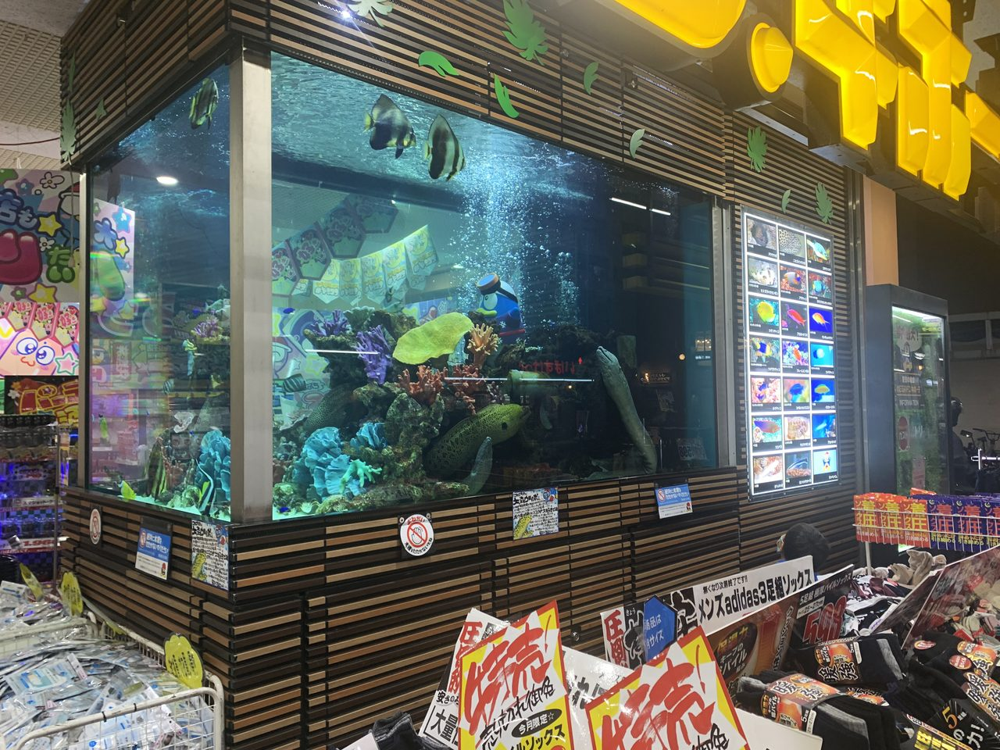
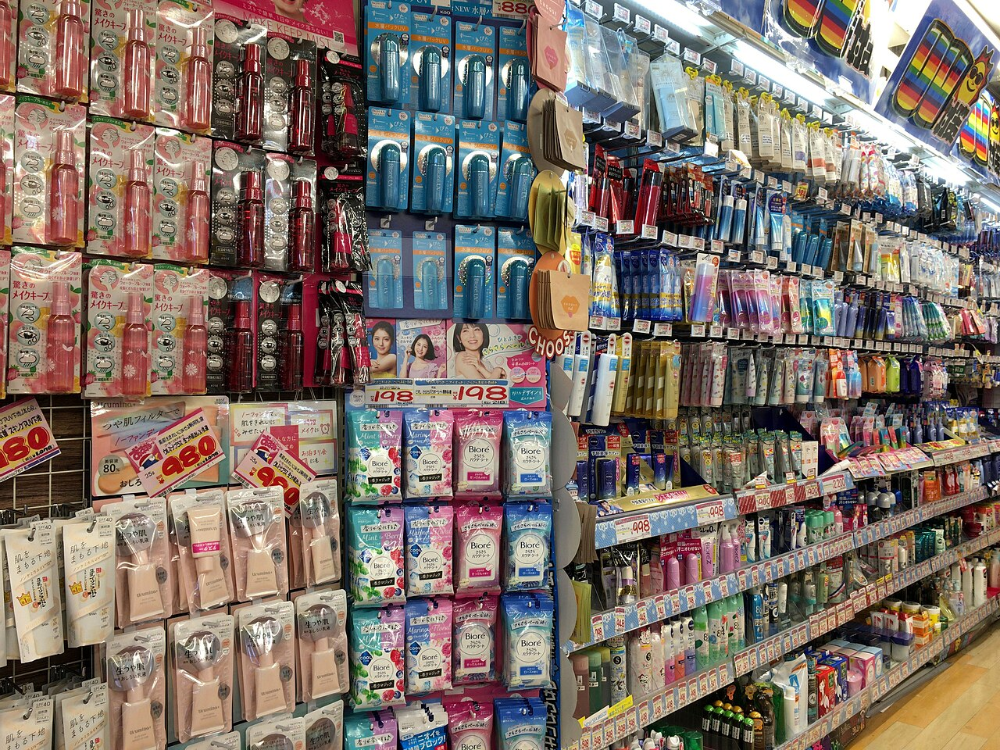
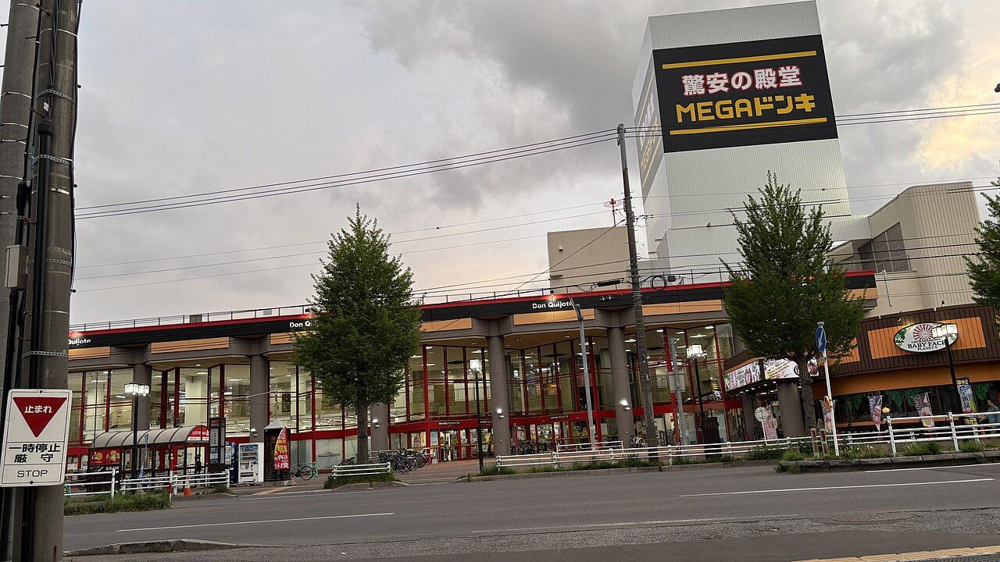
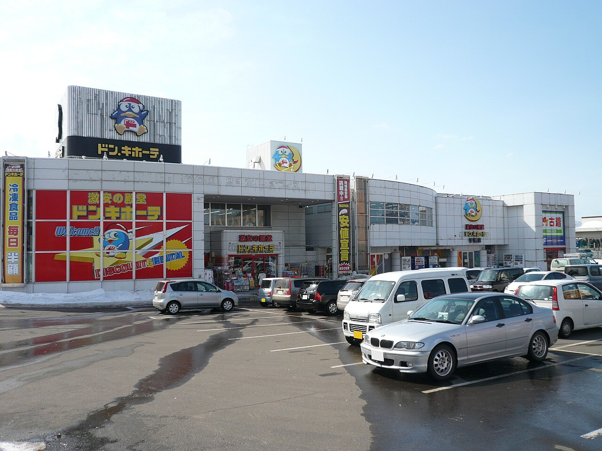

社会・経済Society & Economy
ドン・キホーテの店内は、なぜあんなに狭い？
棚の上までびっしり積まれた商品に、通路へはみ出す手書きの値札。あの狭さは、置き場所が足りないからではありません。棚の断面図と、売り場が入れかわるしくみの図、店の広さのくらべで、ごちゃごちゃの売り場の設計図をのぞいてみませんか。
2026.10.31 UP約5分で読める文：SOMOSOMO編集部
写真：Mega Don Quijote Shinsekai Shop／FelixM（2018年、CC0）
東京・杉並の西荻窪、1978年10月。18坪（約60平方メートル。学校の教室ほど）の小さな雑貨店が開きました。店の名は「泥棒市場」。開いたのは、29歳の安田隆夫です。この店が、のちのドン・キホーテの始まりになりました。
いま、ドン・キホーテを運営する会社 PPIH（パン・パシフィック・インターナショナルホールディングス）のグループは、年に約2.4兆円を売り上げます（2026年6月期）。それでも通路は狭いまま。棚は上まで埋まり、すれ違うにも気をつかいます。大きな会社になったのに、店の中はなぜあんなに狭いのでしょうか。
In a word
狭さは、場所が足りないからではなくわざとです。商品をぎっしり積む圧縮陳列と手書きの値札で、一度では全部見きれない店にしています。お客に探し回ってもらい、買い物の時間そのものを楽しんでもらうための作り方です。
01
Eighteen Tsubo
始まりは、18坪の雑貨店だった
泥棒市場は、安田が仕入れた品を安く売る店でした。小さな店に品を次々と並べ、手書きのPOP（ポップ。値段や売り文句を書いて商品に添える札）を書きまくりました。のちに「圧縮陳列」「POP洪水」と呼ばれるやり方の原型は、ここで生まれたとされます。

泥棒市場があったころの西荻窪1984年8月、中央線の西荻窪駅に入る電車。線路ぞいには、小さなビルと店の看板がひしめいています。泥棒市場は、このような駅の町の小さな店でした。写真：Eidan5032 ChuoLine NishiOgikubo／Olegushka（1984年、CC0）
閉店後に荷ほどきをしていると、帰り道の人が「それ、買える？」と声をかけてきた──安田は自伝『安売り王一代』（2015年）に、そんな夜のことを書いています。店は夜12時まで開けるようになり、年に2億円を売る店に（PPIHの会社案内による）。夜の客も、ぎっしりの棚を眺めて回りました。
02
Fuchu, 1989
立て直しの鍵は、売り場を担当者に任せること
少しずつ仕入れていては利幅が出ないため、安田は問屋（おろし売り）の会社もつくります。1989年3月には東京・府中市に「ドン・キホーテ」の1号店を開きますが、社員に考え方が伝わらず、売り場は乱雑に。毎月1,000万円の赤字を、問屋の会社の利益で埋める日々が続いたといいます。
そこで安田は、仕入れ・値付け・並べ方を、売り場ごとの担当者に任せました。本部が全国の店をそろえて決める大手のスーパーとは、逆のやり方です。いまも会社は、この権限委譲（けんげんいじょう。決める力を現場に渡すこと）を強みとして説明しています。
自分の売り場の品を自分で選び、自分で並べるので、担当者はどう積めば売れるかを工夫します。圧縮陳列は本部の図面どおりに作られたものではなく、任された人たちの工夫で形になった、ともいわれます。
Fig.01売り場が入れかわり続けるしくみ
- 仕入れる売り場の担当者が、何をいくつ仕入れるか決める
- 値段をつける本部の指示ではなく、担当者が売り値を決める
- 積んで、POPを書く棚に詰めて並べ、手書きの札で売り文句を添える
- 売れ行きを見る売れなければ、並べ方や品物を入れかえる
Repeat
見どころは、4つの段階をすべて店の担当者が回していること。担当者に仕入れや値付けを任せ、成果を給与で報いるうちに、圧縮陳列が定着したとされます。PPIHの会社案内などをもとに作った図です。

商品の山に、札が何枚もMEGAドン・キホーテ大森山王店の売り場（2022年）。手前の靴下の山には「特売」と大書きした札がいくつも差してあります。奥には、ウツボが泳ぐ大きな水槽まで。写真：ドンキのうつぼ／Gant223（2022年、CC0）
03
Designed to Hide
狭いのは、全部を見せないため
多くのスーパーは、通路を広くとり、案内の札で、どこに何があるかをすぐわかるようにしています。ドン・キホーテは逆です。安田は『圧勝の創業経営』（文春新書、2025年）のなかで、めざしたのは「商品の数がありすぎて一度では全部見きれない店」だったと語っています。
どこに何があるか全部わかってしまうと、お客は必要なときにしか来なくなる、というのが安田の考えです。ドン・キホーテは、ちょっと時間が空いたときに寄って、探し回ること自体を楽しんでもらう店をめざしました。会社はこれを「時間消費型」の店と呼んでいます。
Fig.02棚の高さで、見えるものが変わる
見どころは、赤い点線（目の高さ）がどこで止まるか。右のような棚の高い通路では、角を曲がるまで次の棚が見えにくくなります。棚の高さや通路の幅は、説明のための模式図です。
奥の通路に入ると棚が高く、先が見えにくくなります。お客は角を曲がるたびに新しい棚に出会い、目当ての品の隣で、思ってもみなかった物を見つけることもあります。いわゆる「ついで買い」です。会社は、便利さ・安さに並べて「楽しさ」を店の柱にかかげています。
ただし、どこも見通せないわけではありません。入り口から眺めると手前の棚は低く、奥まで見渡せて、視線の先には目玉商品が置かれている、と経済誌は指摘しています（東洋経済オンライン、2015年）。
ただし、ごちゃごちゃした売り場がなぜ人を買う気にさせるのか、心理学の研究ではっきり決着がついているわけではありません。狭い通路を窮屈に感じて、店を避ける人がいるのも確かです。

棚の上まで、びっしりMEGAドン・キホーテ渋谷本店の売り場（2022年）。小さな商品がフックに掛けられ、棚の奥までびっしり並んでいます。赤い値札の多さもわかります。写真：Product display in Don Quijote Shibuya branch／毒島みるく（2022年、CC0）
04
Not Every Aisle
狭さは、店によって濃さが変わる
ぎっしりの売り場には、批判もありました。2004年12月13日、さいたま市の浦和花月店で放火による火事があり、アルバイト店員3人が亡くなりました。圧縮陳列とともに、避難経路の策定など防火体制の不備が指摘され、総務省消防庁は全国の消防機関に量販店の立入検査を求めました。
事件とは別に、店の形もいまは1つではありません。「MEGAドン・キホーテ」は、会社が「ファミリー型総合ディスカウントストア」と呼ぶ大きな店です。2019年に福岡市に開いた店は、通路を広くとってショッピングカートで買い物ができる、と地元の報道が伝えました。
Fig.03店の売り場の広さ（平方メートル）
泥棒市場約60
小型店300〜1,000
ドン・キホーテ1,000〜3,000
MEGA3,000〜10,000
見どころは、赤い泥棒市場との差。大きな店はその100倍をこえますが、狭く感じる売り場は今も残ります。棒は、広さの幅のうち広いほうで描きました。小型店は会社のいう「スモールフォーマット」。PPIHの会社案内（2025年）による。泥棒市場は18坪を換算。
ただ、MEGAの名がつけば広々しているとは限りません。第3章の写真の、棚の上まで商品が埋まった売り場も、都心にあるMEGAの渋谷本店です。狭さは、店の場所や広さに合わせて濃くしたり薄めたりする「味つけ」のようなものなのかもしれません。


通りに面した、大きな店左は、MEGAドン・キホーテ函館店（2025年）。横に長い大きな建物です。右は、札幌市手稲区のドン・キホーテ手稲店（2012年）。店の前に広い駐車場があります。外から見ると、ゆったりした店がまえです。写真：MEGAドン・キホーテ函館店／函館広場愛好家（2025年、CC0）、Don Quijote Teine／RJD（2012年、パブリックドメイン）
約5万点2025年2月に開いたドン・キホーテ高知店の品ぞろえ。店だけの限定品も含む。1回の買い物では、とても見きれない数PPIHの会社案内（2025年）による
799店グループの店の数（国内676店、海外123店）。これだけ増えても、本部まかせにせず店ごとに変化に合わせる「個店主義」をかかげる2026年6月末。PPIH 決算短信・会社案内による
約7億人1年間にグループの店で買い物をしたお客の、のべ人数。日本の人口の5倍あまり。スーパーの「アピタ」なども含む2025年6月期。PPIHの会社案内による
Here's the Fun Part
ここが面白い！
ごちゃごちゃは、手間のかかるほうだった
散らかって見える売り場は、手を抜いた結果ではありません。安田は『圧勝の創業経営』のなかで、商品を見やすく並べるほうが店にとっては簡単で、いろいろな商品をジャングルのように並べるほうが「圧倒的に難しい」と語っています。
しかも、その売り場はじっとしていません。2018年の雑誌の取材で、MEGAドン・キホーテ渋谷本店の食品・お酒の売り場の担当者は、陳列を変えるのは「だいたい2〜3日に1回」と答えています。食品やお酒の売り場では、週に2〜3回、景色が組みかえられている計算です。
全部を見せない狭さは、人の手で何度も作り直されることで保たれているのです。
次にドン・キホーテに行ったら、前に来たときと同じ棚を探してみてください。同じ場所に、もう同じ物はないかもしれません。